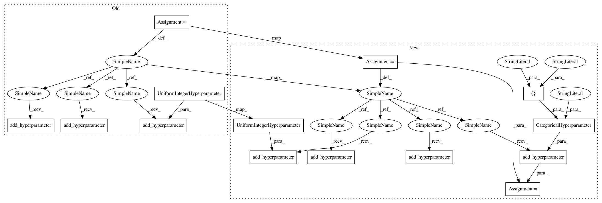

e23bcc6338a3407a163f38ad5b6e8a010286b089,ParamSklearn/components/classification/adaboost.py,AdaboostClassifier,get_hyperparameter_search_space,#Any#,74
Before Change
n_estimators = UniformIntegerHyperparameter(
name="n_estimators", lower=50, upper=500, default=50, log=False)
max_depth = UniformIntegerHyperparameter(
name="max_depth", lower=1, upper=10, default=1, log=False)
cs = ConfigurationSpace()
cs.add_hyperparameter(n_estimators)
cs.add_hyperparameter(learning_rate)
//cs.add_hyperparameter(base_estimator)
cs.add_hyperparameter(max_depth)
cs.add_hyperparameter(algorithm)
return cs
After Change
@staticmethod
def get_hyperparameter_search_space(dataset_properties=None):
cs = ConfigurationSpace()
// base_estimator = Constant(name="base_estimator", value="None")
n_estimators = cs.add_hyperparameter(UniformIntegerHyperparameter(
name="n_estimators", lower=50, upper=500, default=50, log=False))
learning_rate = cs.add_hyperparameter(UniformFloatHyperparameter(
name="learning_rate", lower=0.0001, upper=2, default=0.1, log=True))
algorithm = cs.add_hyperparameter(CategoricalHyperparameter(
name="algorithm", choices=["SAMME.R", "SAMME"], default="SAMME.R"))
max_depth = cs.add_hyperparameter(UniformIntegerHyperparameter(
name="max_depth", lower=1, upper=10, default=1, log=False))
return cs
In pattern: SUPERPATTERN
Frequency: 3
Non-data size: 14
Instances
Project Name: automl/auto-sklearn
Commit Name: e23bcc6338a3407a163f38ad5b6e8a010286b089
Time: 2015-10-01
Author: feurerm@informatik.uni-freiburg.de
File Name: ParamSklearn/components/classification/adaboost.py
Class Name: AdaboostClassifier
Method Name: get_hyperparameter_search_space
Project Name: automl/auto-sklearn
Commit Name: e23bcc6338a3407a163f38ad5b6e8a010286b089
Time: 2015-10-01
Author: feurerm@informatik.uni-freiburg.de
File Name: ParamSklearn/components/classification/adaboost.py
Class Name: AdaboostClassifier
Method Name: get_hyperparameter_search_space
Project Name: automl/auto-sklearn
Commit Name: 03cc78a8beb1f3e8b2bd29c9ba5063ba81955336
Time: 2015-10-01
Author: feurerm@informatik.uni-freiburg.de
File Name: ParamSklearn/components/classification/sgd.py
Class Name: SGD
Method Name: get_hyperparameter_search_space
Project Name: automl/auto-sklearn
Commit Name: 8fd35f58ddb570ce1cf628a48358e4239836cf97
Time: 2015-10-01
Author: feurerm@informatik.uni-freiburg.de
File Name: ParamSklearn/components/preprocessing/feature_agglomeration.py
Class Name: FeatureAgglomeration
Method Name: get_hyperparameter_search_space